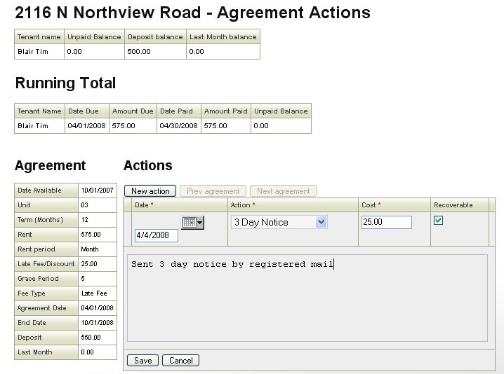

This screen is used to record details of any actions that are performed during a tenancy agreement. It shows a running total of payments owed and paid for the duration of the agreement and allows Agreement actions like phone calls and eviction proceedings to be recorded. Each action may have a dollar amount associated with it. Checking the "Recoverable" check box causes this dollar amount to be added to the list of accounts payable for the tenant.
Copyright Visulate LLC 2007 - 2008